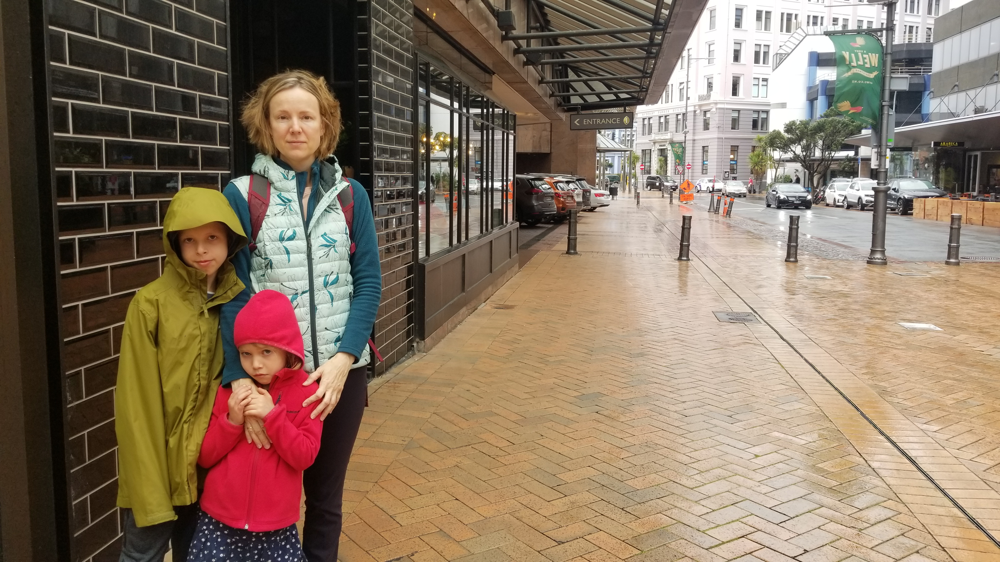
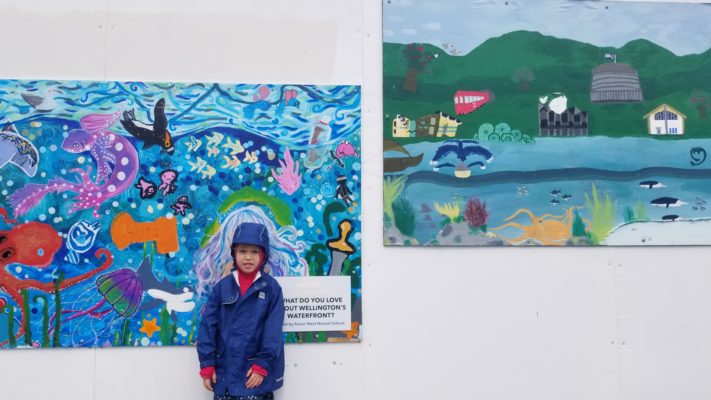
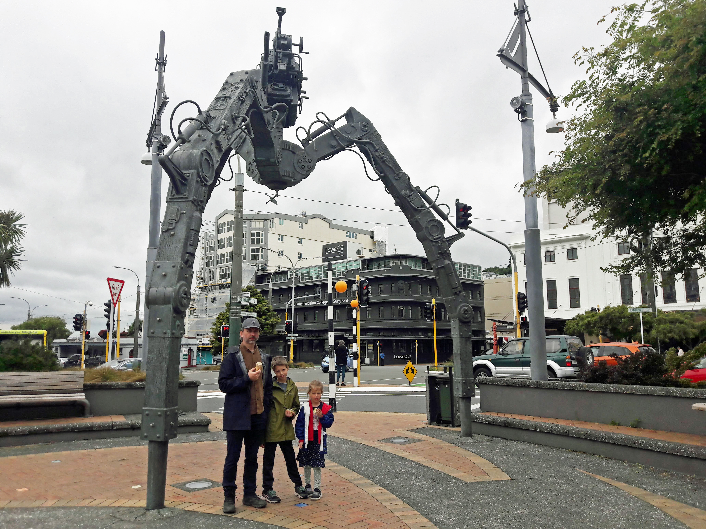
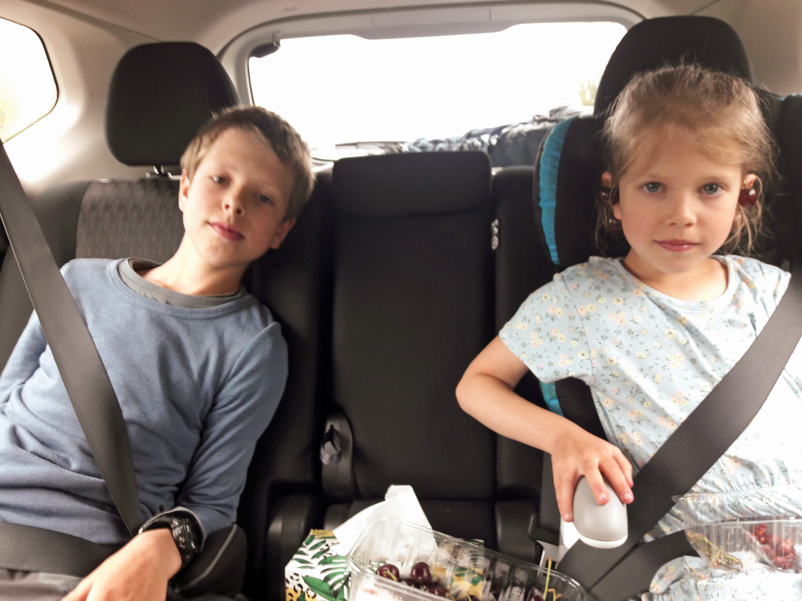
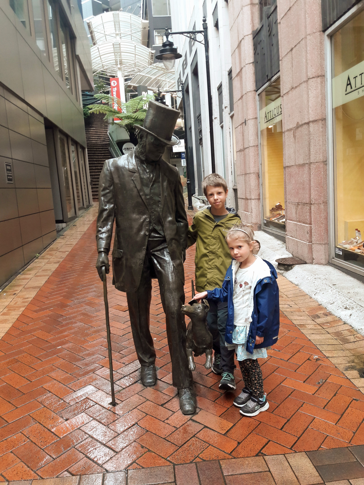
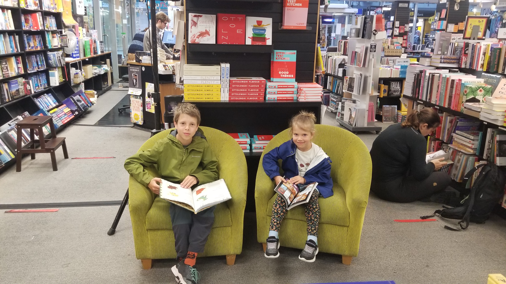

We landed in Wellington a couple days prior to our epic 8-day tramp. The city greeted us with rain and cold - no matter, there was still plenty to do.

The best place to visit in rainy Wellington is Te Papa museum. We marched along the waterfront on the way there and noticed some wall paintings. Does it look like Iza has long flowing hair in this photo?

There were also hopscotch markings along the way.
Ice cream is a must on a vacation, even if the weather is not cooperating.

We walked up to the Mount Victoria lookout, which offers great vistas of the city and the airport. This tree with climbing ropes was probably a bigger hit for the kids.

Other than that we spent most of the time in cafes and restaurants, The Long Bar being our favourite.
We spent also a night in Welly at the end of our entire trip to the North Island, before flying back to Dunedin. Here are the kids with cherries, in the car on the return drive to Welly.

Welly, as before, delivered rain. We ended up just strolling along Lambton Quay.

By far, we spent the most time in the Unity Book store.

Let's hope the Meat-Free Mexican cook book we purchased turns out great meals.